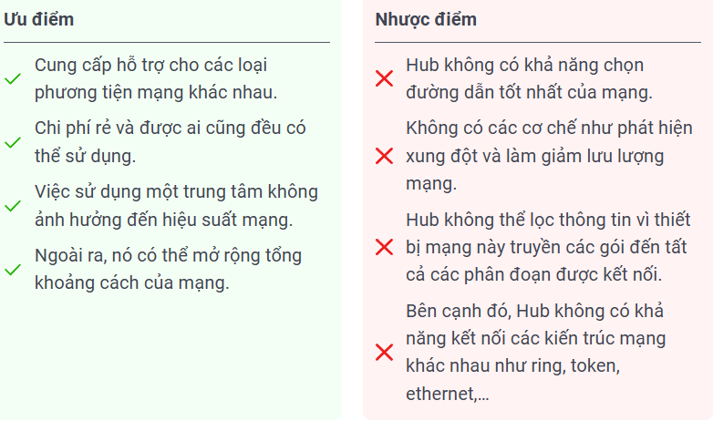

HUB: Là thiết bị mạng tầng vật lý (Layer 1), là một thiết bị mạng để kết nối các máy tính hay các thiết bị khác trong cùng một mạng LAN với nhau. Gồm nhiều cổng (từ 4 đến 24 cổng) khi nhận dữ liệu từ một cổng sẽ chuyển dữ liệu ra tất cả các cổng khác. Hiện nay hầu như đã không còn sử dụng.
➜ Nói tóm lại Hub như kiểu có một dữ liệu nào đó sẽ thông báo tới tất cả các thiết bị kết nối với nó và nó không biết gì về IP, MAC, Address chỉ cần biết nhận được dữ liệu nào đó thì sẽ gửi tới toàn bộ thiết bị cắm vào nó.
🔀 Ưu và nhược điểm của HUB: